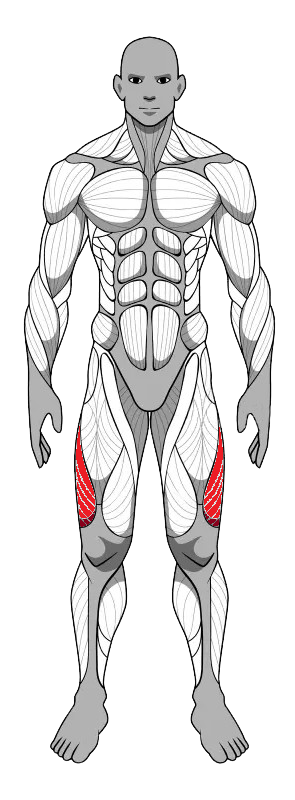
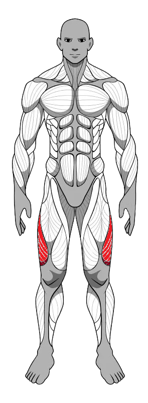
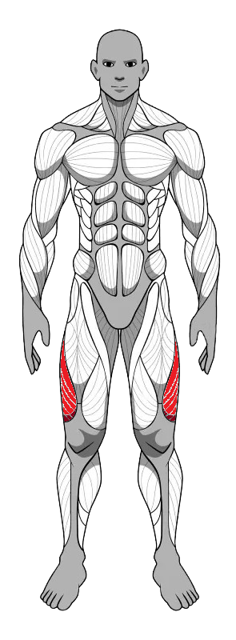

Muscle
Map
Perfil
Sair
Criar Treino
Calculadora de IMC
Peso (kg):
Altura (m):
Calcular IMC
Escolha um músculo
Selecione
Peitoral Superior
Peitoral Medial
Peitoral Inferior
Deltóide Anterior
Deltóide Lateral
Deltóide Posterior
Bíceps Cabeça Longa
Bíceps Cabeça Curta
Braquial
Tríceps Cabeça Longa
Tríceps Cabeça Lateral
Tríceps Cabeça Medial
Abdômen
Reto Femoral
Vasto Lateral
Vasto Medial
Adutores
Abdutores
Trapézio
Latíssimo do Dorso
Rombóides
Quadrado Lombar
Bíceps Femoral
Semitendíneoso
Semimembranoso
Glúteo Máximo
Glúteo Médio
Glúteo Mínimo
Gêmeos
Sóleo

Seu treino
Salvar Treino


 
